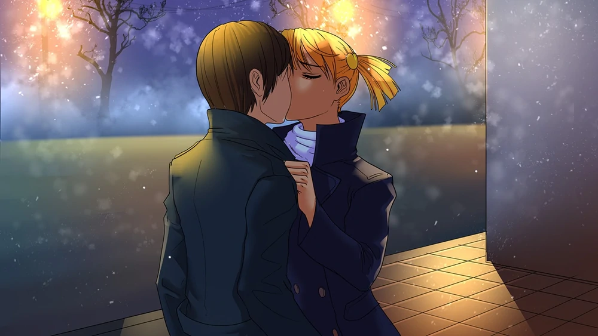
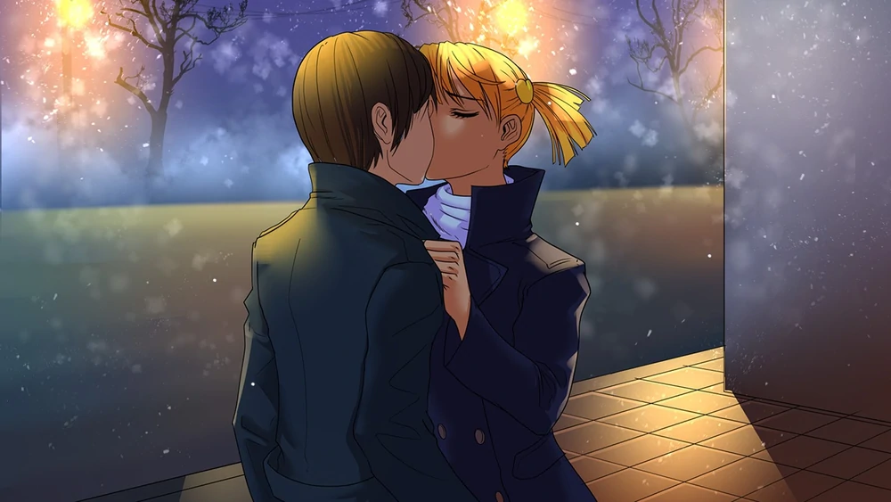
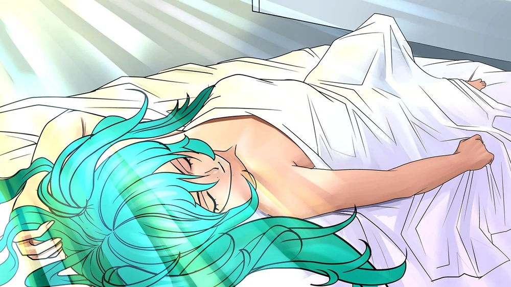
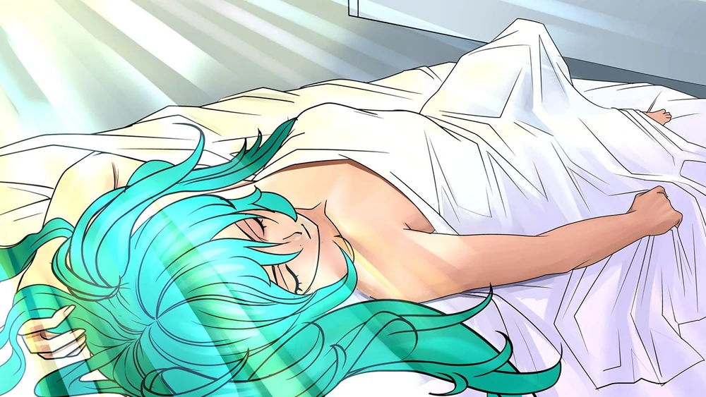

О чём игра?
Бесконечное лето – это визуальная новелла, дарящая самые искренние и светлые переживания об ушедших днях и надеждах, которым ещё предстоит сбыться.

Главный герой игры — одинокий молодой человек Семён. Он живёт за счёт случайных фрилансовых заказов и проводит большую часть своего времени в интернете на анонимных имиджбордах. В один зимний день Семён отправляется на встречу выпускников, садится в автобус марки «ЛиАЗ-677» 410-го маршрута, где засыпает, а просыпается летом в «Икарусе-256» у ворот пионерлагеря «Совёнок».
Обнаружив, что он чудесным образом переместился не только в пространстве, но и во времени, попав из зимы 2009—2010 годов в лето 1980-х (скорее всего, это 1987 год), Семён старается разобраться, как и для чего он тут очутился, почему стал выглядеть как 17-летний подросток, и как ему вернуться обратно в свой мир. Однако вскоре он сближается с некоторыми из жителей лагеря, и от того, с кем он сможет построить отношения, зависит его дальнейшая судьба. Семёна ждут семь насыщенных событиями дней, в течение которых ему предстоит узнать, является ли для него случившееся шансом начать новую жизнь или же наказанием, способным обернуться нескончаемым кошмаром. В итоге, Семён узнает, что лагерь — это временная петля, в которой он находится очень долго и проживает все моменты и концовки по-новой. Если игрок сможет выйти на все «руты», то в конечном итоге Семён сможет выбраться из этой петли.
Имеется типичный для визуальных романов геймплей: игрок в основном занят прочтением текста поверх статичных картинок, время от времени направляя сюжет в нужное русло — к одной из 13 возможных концовок. Уже изученные сюжетные моменты можно быстро проматывать. После релиза по требованию Steam из игры были вырезаны все эротические изображения, но их можно вернуть с помощью выпущенного патча (имеет около 150 тысяч подписчиков в мастерской Steam). В ранних версиях игровые персонажи нарисованы в другом стиле по сравнению с игровыми фонами.
Также существует множество модификаций с различными стилем повествования и жанром. Они дополняют сюжет игры и по-своему отвечают на некоторые вопросы основной кампании или рассказывают новые истории.
Персонажи


Галерея


Обратная связь

Ждем Ваших предложений!

Семён — главный герой визуальной новеллы «Бесконечное Лето». Это типичный посетитель имиджборда. Его образ создан таким, чтобы читатели новеллы могли сравнивать его с собой.
Внешность и характер
Семён соответствует образу типичного живущего в интернете человека. Он является худощавым 25-летним человеком с орлиным носом, карими глазами, каштановыми волосами средней длины, которые лезут ему в глаза, и заметной щетиной на лице. На миникарте лагеря он изображён как человек с пакетом на голове, а в карточном турнире вместо лица Семёна использован чёрный силуэт.
Он ведёт затворнический образ жизни, почти не выходя из дома и редко общаясь с людьми, предпочитая сидеть дома и проводить всё своё свободное время за компьютером, просматривая аниме и общаясь с анонимами на имиджбордах. Подобный стиль жизни привёл к тому, что Семён стал асоциальным и даже несколько бесчувственным. По его словам, настоящих друзей у него нет, а его друг, который пригласил его на встречу выпускников и который является одним из немногих людей, с которым Семён поддерживает контакты, является даже скорее не другом, а просто приятелем. Тем не менее, ему удавалось зарабатывать достаточно, чтобы хватало на жизнь. Семён имеет множество предпосылок к развитию своих талантов, но так и не приложил достаточно усилий для их развития, чаще всего бросая начатое после месяца увлечения. Особенно ему нравится литература, а вот в рисовании ему не повезло, отчего он считает, что это не дано ему от природы.
Попадание в пионерский лагерь особенно сильно отразилось на характере Семёна и внешности. Так, он стал выглядеть на 17 лет, а также смог проявить себя в общении. Хотя характер Семёна сложно назвать мечтательным, он частенько говорит сам с собой, углубившись в свои мысли и обдумывая происходящее, из-за чего периодически выпадает из диалога и теряет нить разговора. Довольно пассивен по отношению к происходящему вокруг, однако если его чаша терпения переполнится, может принять резкое решение и перейти на повышенные тона. В лагере часто отлынивает от общественной работы, желая «найти ответы», но так особо и не преуспевает в этом.
Взаимоотношения
По большому счёту, взаимоотношения с персонажами зависят от действий игрока.
Основные
- Славя — первая, кого встречает Семён по прибытию в лагерь. Славю он описывал как красивую девушку с приятным славянским лицом, длинными косами, похожими на две толстые охапки свежескошенного сена, и голубыми глазами, в которых, казалось, можно утонуть. Семён всегда старается помочь Славе, так как она его часто выручает.
- Лена — при первой встрече Семён описывает Лену как красивую девочку, у которой на лице «муки за судьбы всего человечества смешались с прямо-таки вселенской грустью». Парню изначально понравилась скромная и застенчивая Лена.
- Ульяна — в первый раз Семён увидел Ульяну возле Лены, которую девочка пыталась напугать кузнечиком. Семён всегда старается быть начеку, если рядом с ним Ульяна, и всегда ждёт от неё «подставы».
- Алиса — знакомство Семёна с Алисой началось, когда она ударила его в спину. Семён считает, что она хулиганка, и не особо хочет контактировать с ней, но при всём этом Алиса не вызывает у Семёна отрицательных эмоций.
- Мику — первая встреча с Мику произошла в клубе на второй день, и Семён окрестил её «девочка-мультиинструменталист». Семён всегда раздражается, когда рядом с ним находится Мику, из-за её манеры стрелять словами как из пулемёта и проглатывать половину предложений.
- Пионер — его неожиданные появления сильно пугают героя. Семён не понимает, чего от него хочет этот таинственный пионер, говорящий загадками.
Второстепенные
- Женя — хоть Семён и считает Женю привлекательной, их взаимоотношения не выстроились с самого начала — Женя раздражается постоянными нападками Семёна с глупыми вопросами, а Семён, в свою очередь, опасается её сварливого характера, но при этом отмечает их сходство в нелюдимости. Он характеризует эту девушку как ударницу социалистического труда и как библиотекаршу-йети.
История
Ранняя жизнь
Детство и жизнь Семёна ничем не выделяется среди других людей. Семён родился в СССР незадолго до распада страны в семье неизвестных родителей. Будучи ребёнком, он пошёл в детский сад, а затем и в школу, где в первом классе особенно запомнил момент, когда ему пришлось записывать в тетради гимн Советского Союза. В детстве Семён также отличался хорошей фантазией.
В юношестве (примерно 15-17 лет) он любил проводить время с друзьями за игрой в футбол или сидя за компьютером. В том же возрасте он встретил свою первую любовь, но, к сожалению, их отношения не зашли далеко, и вскоре Семён забыл детали внешности этой девушки, а после так и не находил сил познакомиться с новыми девушками, поскольку не находил в себе сил заговорить с ними.
Начало затворничества
После окончания школы Семён поступает в институт, где знакомится с неким человеком, который становится его другом. Отучившись полтора курса, Семён бросает учёбу и решает найти себе работу. За это время он успевает поработать на паре-тройке работ и даже зарабатывать приличные деньги, но так и не начинает ощущать полноту жизни, чувствуя, что его дни проходят по одному и тому же сценарию, как в фильме «День сурка», с той лишь разницей, что он никак не может повлиять на происходящие события.
В какой-то период он приобретает себе квартиру в довольно крупном городе, а после бросает работу и начинает проводить свободное время дома. За всё время, что он сидел дома, он попробовал несколько разных хобби — рисовать, играть на гитаре, программировать и изучать иностранные языки, но ни в чём из перечисленном не достиг серьёзных успехов, отчего его серьёзными увлечениями оказались просмотр аниме и чтение литературы. Несмотря на интерес к чтению, он не считал себя эрудированным человеком.
Вскоре Семён полностью становится затворником, почти перестав выходить из дома (делая это только по необходимости) и общаться с реальными людьми, проводя всё свободное время на имиджбордах (среди которых оказывается Двач), где общается с анонимами, которые «не имеют пола, возраста и имени». Сама же квартира Семёна становится захламленной берлогой, в которой он так и не удосуживается навести порядок. Тем не менее, несмотря на свой затворнический образ жизни, Семён зарабатывал достаточно, чтобы хватали на жизнь — от времени ему попадались некие «халтурки», а иногда помогали родители.
Незадолго до начала событий игры Семёну стал постоянно сниться один и тот же сон про ворота пионерского лагеря «Совёнок», где странная девочка спрашивала у него «ты пойдёшь со мной?». В отличие от других снов, этот был для него вполне реальным. Тем не менее, просыпаясь, он не мог вспомнить никаких деталей этого сна.
Автобус 410
25-летний Семён продолжал вести свой одинокий образ жизни, пока однажды зимой ему не позвонил друг, предложивший отправиться на встречу выпускников. Не особо горя желанием отправляться на встречу, Семён всё же решает принять предложение друга.
Стоя ранним утром на остановке, он садится на автобус модели ЛиАЗ, следующий по маршруту 410, но во время поездки засыпает.
Жизнь в мире «Совёнка»

Семён в просыпается в автобусе модели «ИКАРУС» где-то за городом в летний сезон, отчего впадает в панику и не может ничего сообразить. Поблизости он видит пионерлагерь под названием «Совёнок», чья архитектура напоминает советскую. Здесь его встречает девушка по имени Славя, которая принимает его за опоздавшего пионера, поскольку внешне Семён выглядит на 17 лет (о чём он в тот момент ещё не знает).
Краткое описание событий в лагере
День 1
В первый день Семён только начинает знакомиться с лагерем и его обитателями — помощницей вожатой Славей, застенчивой Леной, маленькой хулиганкой Ульяной, грубоватой Алисой, кибернетиком Электроником и вожатой Ольгой Дмитриевной.
Из-за "отсутствия мест" Семёна селят в домике вожатой, которая также обращается к нему как к молодому пионеру, что весьма удивляет его. Другими поводами для удивления Семёна становится также то, что местные обитатели ведут себя так, словно СССР не распался, а также то, что обитатели стараются уходить от ответа, когда речь заходит о расположении лагеря и какой сейчас год. Другим важным открытием для Семёна становится то, что он выглядит гораздо моложе своего реального возраста.
День 2
Во второй день Семён ходит по лагерю и собирает подписи в разных кружках — он успевает побывать в библиотеке, где знакомится со сварливой библиотекаршей Женей, заглядывает в медпункт, где встречает экстравагантную медсестру Виолу, посещает общие кружки и знакомится с его обитателями - Шуриком и Электроником, а также встречает Мику, главу и единственного члена музыкального кружка.
Вечером Семён по инициативе Электроника участвует в карточном турнире с обитателями лагеря.
День 3
Третий день отличается подготовкой лагеря к вечерней дискотеке.
Важной деталью для Семёна становится нахождение записки со своим почерком «ты здесь не просто так» (найти её он сможет, только если не сблизится ни с кем из девушек, откажется идти к Алисе на сцену или помогать Лене в медпункте).
День 4
В четвёртый день Семён заменяет Виолу на посту медсестры, а Алиса пытается взорвать памятник Генде на площади. После этого Семёну предстоит выбор, пойти в заброшенный старый лагерь на поиски Шурика одному или с кем-то из девушек (для этого должен быть значительный прогресс в отношениях). Там Семён найдёт подземный туннель, заброшенное бомбоубежище, старую шахту и Шурика, который попытается напасть на Семёна.
Тем не менее после выхода из подземелий старого лагеря Шурик успокаивается и забывает все события прошедшего дня.
День 5
Пятый день в лагере отличается тем, что Семёну придётся искать ингредиенты для торта в честь спасения Шурика по поручению Ольги Дмитриевны. Одним из примечательных событий этого дня станет сбор земляники на небольшом острове с Леной и Славей, а закончится он вечерним походом, где ему в пару достанется Женя. Именно в этом походе Семёну предстоит сделать максимально критичный выбор, от которого будет зависеть концовцка и все события последующих дней в лагере.
Концовки
Одиночка
Если Семён так ни с кем конкретно и не сблизился, то он без особого энтузиазма играет в «Города», а после возвращается обратно в лагерь.
День 6
В лагере Семён обнаруживает странного пионера, чьё лицо постоянно находится в тени, и который внезапно исчезает. Семён отмечает, что у незнакомца знакомый голос и схожая с ним самим фигура. По намёкам Пионера Семён понимает, что он может быть как-то связан с ответами, которые он так долго искал. Поговорив с Ульяной, Семён решает найти незнакомца и разговорить его, заглянув на стоянку, «где всё и началось». Там он встречает похожего пионера, который прячется за статуей и говорит Семёну, что из Совёнка есть выход и призывает не верить первому пионеру, после чего исчезает.
В домике вожатой Семён обнаруживает свой телефон с открытым меню набора сообщения, где набрано предложение «Не прав ты, Семён! Ой, неправ!». В страхе Семён убегает на лесную поляну, где ему встречается тот самый первый пионер, который рассказывает ему всё, что знает: что после 7 дней лагерной смены Семён непременно проснётся внутри автобуса 410 у ворот в лагере, где его встретит Славя, а все обитатели будут вести себя так, будто никогда не видели Семёна. И так будет повторяться цикл за циклом каждые 7 дней. Сам же Пионер оказывается сошедшим с ума от бесконечного повторения циклов, который научился путешествовать между мирами Совёнка. Он сообщает, что ситуация с повторением циклов была со всеми Семёнами из других реальностей. Пионер сообщает что пионеры и пионерки ничего ему не расскажут, даже при угрозе пытками и убийствами и что из Совёнка нет выхода, говоря Семёну не верить пионеру, которого он встретил у ворот лагеря. Когда Семён закрывает глаза, таинственный незнакомец вновь исчезает. Вернувшись в домик вожатой, Семён игнорирует её нравоучения и засыпает.
День 7
Утром Семён встречает пионера, который убеждавшего его в том, что из лагеря есть выход. Он говорит, чтобы Семён продолжал верить, что из лагеря есть выход, после чего исчезает. Семёна окликает Славя, которая сообщает ему, что сегодня последний день смены, а вечером все пионеры сядут на автобус и уедут из лагеря.
Семён решает посидеть в домике вожатой, и сам не замечает, как засыпает, но его будит голос Пионера. Спросив Семёна про пионера с остановки, он говорит, что тоже когда-то верил в возможность выбраться из лагеря, но сейчас он уверен, что дальше будут только витки и ничего больше не изменится. Следом начинают заходить девочки, с которыми Семён познакомился в лагере — Славя, просящая у Семёна адрес, Ульяна, называющая Семёна «не таким уж тормозом», Лена, возвращающая потерянный Семёном телефон, Алиса, отчитывающая Семёна за крик, а таинственный Пионер каждый раз язвительно комментирует их визиты, после чего в очередной раз исчезает.
Когда Семён идёт с Ольгой Дмитриевной к автобусу, он слышит таинственный голос, который сообщает что «нас» (то есть, других Семёнов) великое множество, даже больше тысячи, и что многие из них сумели выбраться. Голос говорит, что он остался в этом месте, дабы даровать другим возможность выбраться. Голос предлагает Семёну последовать за ним на второй цикл, сказав что первый «злой» Пионер лгал и что его желание это уничтожить всех, а также сообщив, что он скажет ему, как выбраться. Голос говорит, что после разговора с Пионером никто не возвращался. Голос торопит Семёна быстрее принять решение — идти с ним или нет.
Плохая концовка (Epic Fail)
Если Семён всё же решает идти за голосом, то на вопрос «И куда надо идти?» голос отвечает, что они уже пришли, после чего Семён теряет сознание. Звучат титры с клипом Between August and December — 410.
По словам разработчиков, в этой концовке Семён оказывается навсегда заперт в мире лагеря и обречён на бесконечные витки, как и остальные пионеры.
Хорошая концовка (Титан одиночества)
Семён не решается идти за голосом. Сев в автобус, он засыпает, видя перед собой силуэт некой девочки(ей окажется Юля), после чего засыпает. Приходит в себя Семён уже в своей квартире. Подойдя к компьютеру, он обнаруживает, что в реальном мире прошло всего 14 часов. В мессенджере главному герою приходят сообщения - сначала от институтского товарища, который говорит о классно проведённом времени вчера. Осознав о том, что никакого пионерлагеря не было, Семёну становится очень плохо, отчего в припадке он разбивает кулаком клавиатуру и начинает кричать о том, чтобы ему вызвали санитаров, решив что он сходит с ума, раз ему видятся такие галлюцинации. Вечером Семёну пишет неизвестная девушка с анонимным аккаунтом, которую Семён принимает за кого-то, с кем он был на встрече выпускников. На слова девушки о том, запомнил ли он, что она ему сказала, Семён отвечает отрицательно, на что она говорит, что они ещё встретятся.
Семён продолжает вести образ жизни затворника, как и до попадания в Совёнок, пока ему вновь не пишет неизвестная девушка (это опять Юля), которая спрашивает, не изменилась ли жизнь Семёна, на что тот отвечает "ничего не поменялось". Когда аноним упоминает про то, что "такое не каждый день случается", Семён вспоминает про Совёнок и пытается узнать, с кем же он говорит. Собеседница может слышать Семёна, даже если он не печатает ей сообщения. На вопрос "Почему я" Семёну приходит ответ, что Семён - причина всему и что скоро он всё узнает. Семён начинает терять память о произошедшем в лагере.
Концовки по персонажам
Славя
- Плохая концовка («Успешный превозмогатель»)
- Хорошая концовка («Тёплая ламповость»)
Алиса
- Плохая концовка («Лидер митол-группы»)
- Хорошая концовка («Гуру пикапа»)
Лена
- Плохая концовка («Вскрываемся!»)
- Хорошая концовка («Всё как у людей!»)
Ульяна
- Плохая концовка («ICQ выше среднего»)
- Хорошая концовка («Гроза педобиров»)
Другие
- Мику: «What is this I don't even»
- Юля: «Собственная кошкодевочка»
- Все вместе/Гаремная концовка: «Harem master 80 lvl»
Заметки
- Семён курильщик. Это негативно отразилось на его выносливости, из-за чего ему не удалось догнать Ульяну даже будучи в теле молодого парня.
Интересные факты
- В демо-версии 2010 года упоминался отец Семёна, который носил причудливые очки и вёл себя довольно вызывающе: бросил семью, оставив Семёну квартиру. Сам по себе он является отсылкой к персонажу аниме «Гуррен-Лаганн» по имени Камина. В финальной версии отец Семёна упоминается только в хорошей концовке Лены.
- Возомжно, имя Семён является отсылкой к нарицательному имени Семён Персунов. Это имя, в свою очередь, происходит от выражения the same person (англ. «тот же человек») — так говорят об анонимах, выдающих себя за нескольких людей.
- Семён косвенно упоминается в визуальной новелле Love, Money Rock'n'Roll как "парень из будущего, который попадает в пионерский лагерь" в качестве персонажа манги Николая Анохина, главного героя новеллы.
Прохождение
У каждого персонажа есть свои значительные выборы, которые прибавляют Вам баллы. Для выхода на концовку одной из девушек в 6 и 7 днях надо набрать 6 баллов. Для хорошей концовки — 9 или более. Для плохой концовки надо набрать менее 9-ти баллов.
| День 5 |
|
Галерея


Славя — одна из главных героинь новеллы "Бесконечное Лето".
Внешность и характер
Внешность Слави соответствует её имени — красивая голубоглазая девушка с золотистыми волосами, заплетёнными в две длинных косы. Добрая, ответственная, фактически исполняет роль помощницы вожатой. Пользуется доверием работников лагеря, иногда в своих целях. Однако, спорное окончание рута, сцена в лесу после карточного турнира и инициатива, проявляемая в любовной сцене, даёт повод сомневаться в её искренности. Раскованна, часто не испытывает стеснения или стыда перед главным героем. Любит вышивать и вязать. Любит плавание, причём, порой занимается им в ночное время суток. Семёну говорит, что любит природу, и хочет быть краеведом.
Взаимоотношения
Следуя своему образу, старается поддерживать хорошие взаимоотношения со всеми персонажами. Из-за своей правильности иногда имеет проблемы с Алисой и Ульяной. Является соседкой Жени.
История и концовки
Славя — первый человек, которого Семён встречает в лагере, и именно она вводит его в курс дела. Солидную часть времени в развитии с ней отношений занимает совместная работа по лагерю. В конце рута главный герой покидает лагерь и, смирившись, возвращается к своей обычной жизни. В хорошей концовке Семён встречает на остановке девушку, похожую на Славю и приглашает её к себе домой. В концовке Юли Семён выбирает между шестью девочками, с которыми он строил отношения, и среди ниx есть Славя. В гаремной концовке Славя и ещё четверо девочек приходят к Семёну домой.
Старая история
1. Характер:
Девочка, всё детство которой прошло в деревне, в большой семье, с людьми, ценящими традиции и знающими, что в этой жизни чего стоит. Там ей была привита любовь к работе, правильные взгляды на мир. Она научилась любить в этом мире всех и каждого. Словом, очень правильная, хрестоматийная славянская девушка. Её большая тайна состоит в том, что она — не та, за кого себя выдаёт. В деревне она живёт всего несколько лет, у надёжных людей, под вымышленным именем — Славяна. С рождения её воспитывала старшая сестра, Россия-онеесама (Лейтенант Службы Безопасности, куратор проекта «Родина»), которая является одним из лучших и самых законспирированных тайных агентов в мире, из немногих конкурентов г-на Бонда (Не слишком серьезно относимся). Славя с детства жила в спецлагерях КГБ (спецшколы), поэтому обучена боевым искусствам и военному ремеслу, спортивна и в нужные моменты крайне хладнокровна и расчётлива. - Добрая, всепонимающая, всепрощающая. Рассудительная. Типичная девушка-славянка в лучшем смысле этого слова, сто-двести лет назад на таких очень охотно женились. Бесстрашная, предельно честная, никогда не врет. Идеальная девушка, одним словом, хотя и не всем нравятся такие. Очень правильная, кто-то скажет даже, что слишком правильная — просто она так воспитана. Ничего не боится и почти ничего не стесняется. Знак зодиака: стрелец
2. Приоритеты:
Тот самый случай, когда девушку надо завоевать. Ей нужен самый лучший парень, на прочее она вряд ли согласится: чтобы любил, чтобы оберегал, чтобы помогал. На самом деле она весьма самостоятельна, но ведь двое хороших людей всегда лучше, чем один! Скорее всего, никогда не влюблялась по-настоящему, хотя и любит весь мир. Но если уж влюбится - то крепко и навсегда, будьте уверены.
3. Поведение:
Степенная, рассудительная. В критической ситуации мгновенно собирается и знает, что делать. Любит работать и обожает помогать другим. Не прочь сама приготовить что-нибудь вкусное и угощать всех. С умеренным энтузиазмом участвует в проделках, но всегда сохраняет ясную, холодную голову и четко знает, что можно, а что нельзя.
Интересные факты
- В демо-версии 2010 года упоминался отец Семёна, который носил причудливые очки и вёл себя довольно вызывающе: бросил семью, оставив Семёну квартиру. Сам по себе он является отсылкой к персонажу аниме «Гуррен-Лаганн» по имени Камина. В финальной версии отец Семёна упоминается только в хорошей концовке Лены.
- Возомжно, имя Семён является отсылкой к нарицательному имени Семён Персунов. Это имя, в свою очередь, происходит от выражения the same person (англ. «тот же человек») — так говорят об анонимах, выдающих себя за нескольких людей.
- Семён косвенно упоминается в визуальной новелле Love, Money Rock'n'Roll как "парень из будущего, который попадает в пионерский лагерь" в качестве персонажа манги Николая Анохина, главного героя новеллы.
Прохождение
У каждого персонажа есть свои значительные выборы, которые прибавляют Вам баллы. Для выхода на концовку одной из девушек в 6 и 7 днях надо набрать 6 баллов. Для хорошей концовки — 9 или более. Для плохой концовки надо набрать менее 9-ти баллов.
| Пролог |
|
| День 1 |
|
| День 2 |
|
| День 3 |
|
| День 4 |
|
| День 5 |
|
| День 6 |
|
Галерея


Лена — одна из главных героинь новеллы "Бесконечное Лето".
Описание и характер
Лена — девушка среднего роста с тёмно-фиолетовыми волосами, собранными в два торчащих в разные стороны хвоста. Главный герой при первой встрече описывает Лену так: «На её красивом лице, как мне показалось, муки за судьбы всего человечества смешались с прямо-таки вселенской грустью.»
Асоциальна, крайне застенчива. Любит читать книги и сторонится быть в центре внимания. При всём этом, в определенных ситуациях ведёт себя уверенно и хладнокровно. Влюблена в главного героя, отчего при встречах с ним застенчивость Лены проявляется сильнее.
Но узнав Семёна получше, Лена может разговаривать с ним достаточно свободно (и порой даже очень экспрессивно).
Комментарий сценариста
«Лена — её никто никогда не видел настоящую (кроме, скорее всего, Алисы), потому что она никогда никому не показывала себя такой. У неё есть желания, есть стремления, но она боится быть непонятой, боится до такой степени, что давит всё это в себе, пока оно не взрывается и не вырывается наружу, как Везувий. Она хочет страстно любить, до самоотречения, но чтобы докопаться до этого, придётся пройти много защитных слоев.»
Взаимоотношения
- Ульяна — для неё Лена является «жертвой» для разного рода проделок и шалостей, однако, большую часть времени они никак не контактируют, так как для Ульяны она слишком скучная.
- Славя — в самой игре взаимоотношения Слави и Лены показаны в виде дружеских разговоров.
- Алиса — являются давними знакомыми, в некотором роде — соперницами. К ней Лена относится достаточно негативно. Взаимоотношения между девочками становятся весьма конфликтными, когда возникает общий интерес — Семён.
- Мику — соседка по домику.
- Семён — влюблена в него с первого взгляда.
История и концовки
Лена является одной из главных героинь новеллы, и имеет рут с двумя концовками — хорошей и плохой, в зависимости от выборов игрока.
Лена испытывает симпатию к главному герою с самого начала игры, но несмотря на то, что симпатия взаимна, главный герой не принимает почти никаких действий вплоть до её спора с Алисой в походе.
Интересные факты
- Из всех основных девушек Лена имеет самые нестандартные концовки, которые породили различные предположения об особом месте Лены в истории.
- Первоначально, до релиза, плохая концовка Лены называлась «Вдоль, а не поперёк». Своё нынешнее название («Вскрываемся!») она получила уже в релизной версии из-за популярности у читателей дорелизной версии данной фразы при обсуждении бед-энда и их аналогии с аналогичной фразой Электроника во время объяснения правил придуманной им карточной игры. Из-за непереводимой игры слов, в иноязычных версиях игры название концовки осталось первоначальным (например, англ. «It's Down The Road, Not Across The Street»).
- В первый день, когда Семён подходит к домику вожатой, вместо «…и хватит издеваться над Леной…» ему послышалось «…и хватит издеваться над Реной…» (отсылка к серии новелл «Когда плачут цикады»). Эта отсылка обыграна в руте Мику.
- По признанию сценариста, Лена является его любимым персонажем
- Из-за необычайно спокойного поведения Лены в шахтах возникла теория, согласно которой она, как и Пионер, помнит о предыдущих циклах (опровергнуто сценаристом).
- У Лены есть (или была) кошка, она упоминается в её хорошей концовке.
- Лена занимается изобразительным искусством. На это указывают рисовальные принадлежности у изголовья её кровати и холсты с пейзажами, развешанные над кроватью вместо обычных для всех прочих персонажей постеров. В некоторых модах это её хобби обыгрывается.
- Начиная с версии 1.2 для девушки, изображение которой сопровождает текст дисклеймера при запуске игры, используется спрайт Лены.
- В связи с тем, что фамилия Лены в игре не упоминается, в фанатской среде распространилось несколько неофициальных вариантов фамилий, которыми именуют персонажа. Наибольшее распространение получил вариант «Тихонова» использованный в популярном моде «7 дней лета». Другие популярные варианты — «Унылова» и «Ичанова».
- Согласно одному из ранних концепт-артов игры, рост Лены составляет 162 сантиметра.
Прохождение
У каждого персонажа есть свои значительные выборы, которые прибавляют Вам баллы. Для выхода на концовку одной из девушек в 6 и 7 днях надо набрать 6 баллов. Для хорошей концовки — 9 или более. Для плохой концовки надо набрать менее 9-ти баллов.
| Пролог |
|
| День 1 |
|
| День 2 |
|
| День 3 |
|
| День 4 |
|
| День 5 |
|
| День 6 |
|
Галерея


Алиса Двачевская — одна из главных героинь новеллы "Бесконечное Лето".
Внешность и характер
Алиса — девушка среднего роста с ярко-рыжими волосами, завязанными в два коротких хвоста, и очень выразительными янтарными глазами. Поначалу характеризуется главным героем как неисправимая хулиганка из-за её страсти к разнообразным пакостям и нежелания следовать правилам лагеря. Но оказывается, что это, по сути, маска, и вне этого образа Алиса добра, боязлива и наивна, а также стеснительна и неопытна в любви. Любит игру на гитаре, но никогда не была замечена за игрой на публике. Любит плавание. Сильно раздражается, когда кто-то называет её "ДваЧе".
Алиса — человек, который не будет связываться с любым встречным, так как имеет твёрдые принципы относительно людей, поэтому достаточно тяжело получить её расположение.
Взаимоотношения
- Семён — смог заинтересовать Алису своим необычным поведением, после чего она влюбилась и стала оказывать своебразные знаки внимания.
- Ульяна — соседка по комнате, лучшая (и единственная) подруга в лагере. Вместе они проворачивали многие проделки. Для Алисы она как младшая сестра, о которой нужно заботиться.
- Славя — взаимоотношения с ней в новелле никак не раскрыты, но очевидно то, что Алиса недолюбливает Славю за её "правильность".
- Лена — давняя знакомая, на которую Алиса с детства таит обиду за постоянное отнятие у неё внимания окружающих. В лагере стараются не обращать внимания друг на друга, но всё меняется, когда в их жизни появляется общий любовный интерес — Семён.
- Мику — разделяет любовь Алисы к музыке, в руте Ульяны было показано их общение.
История и концовки
Алиса является одной из главных героинь новеллы и, как и все остальные, имеет рут с двумя концовками - хорошей и плохой, в зависимости от выборов игрока. Влюбившись в Семёна, она расстраивается тем, что Лена уже якобы заняла его, и сам герой просто недолюбливает Алису. Потому она решает скрыть это от него и не даёт ему знать о своих чувствах вплоть до случайного совпадения, когда вечером пятого дня в походе он подслушал их с Леной спор на эту тему, и узнал всё сам.
Старая история
- Характер:
Пацанка. Выросла в не самых легких условиях. Характер твердый, иногда вспыльчивый. Заядлая спорщица. Не полезет за словом в карман и легко может распустить руки. В то же время своих не бросает, за друзей стоит горой и дружбу ценит превыше всего. Двач-тян курит, но об этом никто не знает кроме СССР-тян. (Ульяны) Она всегда делает это одна, и в такие моменты обнажается вся ее внутренняя хрупкость. Если ее узнать получше то она будет относиться более вежливо. Также она не раз пыталась подставить Семена. Знак зодиака: скорпион - Приоритеты:
Она примет лишь человека, который не уступает ей ни в чем. Смелый, верный, преданный, чуть-чуть безбашенный. И главное — любящий ее такой, какая она есть! Тогда Двач-тян станет вашей, и поверьте, с ней не будет скучно. - Поведение:
Во всем имеет активную позицию, которая часто противоречит общепринятым порядкам, в действиях руководствуется только своим мнением. Не любит большие компании, предпочитая находиться в небольшом кругу проверенных "своих". Не прочь похулиганить, чтобы поддержать свой авторитет. Игнорирует все лагерные правила и презирает веселые конкурсы. При этом нет такого вида спорта, в котором она не занимает одну из лидирующих позиций. Ненавидит рутину (у вас больший шанс увидеть американскую подлодку рядом с причалом, чем ДваЧе с метлой, подметающую территорию лагеря). Может совершенно неожиданно проявить сочувствие и нежность, однако, это вовсе не означает что вы завоевали ее расположение. Назавтра, скорее всего, вы увидите привычную дерзкую двач-тян, и очень засомневаетесь, не приснилось ли вам все это.
Интересные факты
- Изначально Алиса должна была выглядеть немного по-другому — её хвосты должны были быть больше, и похожими на молнии - таким образом, она копировала дизайн Двач-тян. Но заграничные игроки не понимали отсылки и вместо этого прозвали её "Pikachu-girl" из-за того, что её хвостики напоминали хвост покемона Пикачу/ Художников не устроила такая реакция и они внесли коррективы в дизайн.
- В старой версии сюжета Алиса была сиротой, и росла в детдоме (в некоторых модах это обыгрывается). Также она курила, пила и вела себя в целом более вызывающе. В конечной версии это было решено убрать.
- В первоначальной версии сценария персонажа звали Белла Двач, за что некоторые читатели называли её "Белка".
- Одним из изначальных прототипов Алисы была Реви "Двурукая" из манги и аниме "Пираты Черной Лагуны".
- Алиса — единственная пионерка, которая в стартовом ролике не смотрит на главного героя в салоне автобуса.
- В домике Алисы на стене висит постер из аниме-рок-группы "Detroit Metal City".
- Её имя, возможно, является отсылкой к советской рок-группе "Алиса", сама Алиса также увлекается рок-н-роллом.
- Согласно одному из ранних концепт-артов игры, рост Алисы составляет 168 сантиметров.
- В раннем сюжете Бесконечного лета фигурировал персонаж майор Сталина, которая являлась мамой Двач-тян (Алисы).
- Алиса Двачевская появляется как фоновый персонаж в "Love, Money, Rock n' Roll", другой игры от Soviet Games, разработчиков "Бесконечного лета".
Прохождение
У каждого персонажа есть свои значительные выборы, которые прибавляют Вам баллы. Для выхода на концовку одной из девушек в 6 и 7 днях надо набрать 6 баллов. Для хорошей концовки — 9 или более. Для плохой концовки надо набрать менее 9-ти баллов.
| Пролог |
|
| День 1 |
|
| День 2 |
|
| День 3 |
|
| День 4 |
|
| День 5 |
|
Галерея


 
 Мику — одна из главных героинь новеллы «Бесконечное Лето», единственная участница и заведующая музыкального кружка. Прообразом Мику является Мику Хацунэ — японская виртуальная певица.
Внешность и характер
Мику — девушка красивой внешности с одной отличительной особенностью — очень длинными циановыми волосами, завязанными в два хвоста, доходящих до колен. Очень жизнерадостна и позитивна, но чересчур болтлива, чем быстро утомляет окружающих.
Взаимоотношения
Не была замечена в общении с другими героями, помимо Алисы и Семёна. С первой, возможно, дружит и разделяет интерес к музыке. Семён же часто становится её собеседником поневоле, а также имеет несколько событий в игре, связанных с ней. Проживает в одном домике с Леной, с ней она тоже общается.
История и концовки
Изначально Мику планировалась как комедийный персонаж второго плана без собственного рута. Однако позже в процессе разработки игры одно дополнение переписали под историю аквамариновой. В результате получился рут с одной концовкой, сильно выпадающий из стилистики игры. Он отличается большой хоррорной направленностью, а также является самым фантастичным из всех рутов.
Несмотря на то, что рут назван её именем, фактически в самом руте Мику не играет большой роли и заменена другим, внешне идентичным персонажем, что вызвало недовольство фанатов.
Интересные факты
- Её мать — японка.
- Мику — единственный персонаж, голос которого слышен в игре, во время её песни на японском под аккомпанемент Семёна на гитаре.
- Во вступлении игры у Мику развязан галстук.
- Мику любит мороженое 48 копеек
Прохождение
У каждого персонажа есть свои значительные выборы, которые прибавляют Вам баллы. Для выхода на концовку одной из девушек в 6 и 7 днях надо набрать 6 баллов. Для хорошей концовки — 9 или более. Для плохой концовки надо набрать менее 9-ти баллов.
| Пролог |
|
| День 1 |
|
| День 2 |
|
| День 4 |
|
Галерея

 
Ульяна — одна из главных героинь новеллы "Бесконечное Лето".
Внешность и характер
Ульяна — девушка на вид лет 14, с красными волосами, собранными в два толстых хвоста. Весёлая, непоседливая, из-за детской непосредственности не всегда осознаёт последствия своих действий.
Взаимоотношения
Из-за постоянных и не всегда добродушных подколок и розыгрышей часто конфликтует с обитателями Совёнка, кроме своей соседки по домику и подруги Алисы, часто участвующей в проделках вместе с ней. Однако, обиду на Ульяну никто долго не держит.
История и концовки
Ульяна имеет рут с хорошей и плохой концовками. Отношения, возникающие с ней, ближе к дружбе, чем к любви. Семёну придется подыграть в проделках и вступиться за неё перед Ольгой Дмитриевной. Единственная девушка, в руте которой не содержатся картинки порнографического содержания. Именно она олицетворяет собой всю суть детских (пионерских) лагерей — беззаботное веселье, приколы, пионерскую дружбу и взаимовыручку.
Старая история
- Веселый, озорной, неунывающий. Ходячий энерджайзер. Генератор самых безумных идей, двигатель прогресса. Инициатор нарушений лагерных правил, заводила, ходячий кавай. Хитрее, чем кажется.
- "Тихий омут, где воды всего на ладонь, а глубже - черти штабелями до самого дна". Кот в сапогах из Шрека (когда ей чего-то нужно, чего-то хочется, умиляет так, что растопит самое ледяное сердце, на неё решительно невозможно сердиться).
- Любит подлизываться. Быстро соображает и мгновенно ориентируется в ситуации. Несмотря на все это, где-то очень глубоко ранима и трогательна, как и все, хочет, чтобы о ней заботились.
Характер:
- Так как СССР-тян — маленький ходячий апокалипсис, для гармонии ей нужен кто-то, кто уравновесит ее. (хрестоматийный пример — Кён+Харухи). Правда, для этого скорее всего придется сначала принять ее такой, какая она есть (обязательно), поучаствовать в самых безумных ее авантюрах и пару раз поотдуваться за её шалости. Скорее всего, придется не раз выручать ее, если зайдет слишком далеко. Потом - уравновесить рассудительностью и осторожностью. Ну и, собственно, ПРОФИТ.
Приоритеты:
- Не сидит на месте. Много бегает и умудряется чуть ли не быть в нескольких местах одновременно. Может спонтанно врываться в диалоги с другими персонажами, бесцеремонно являться среди ночи и тащить героя туда, где что-то происходит. Нетерпелива и непоседлива. Имеет свое мнение по абсолютно любому вопросу, разубедить её поначалу будет очень непросто.
Поведение:
Интересные факты
- В оригинальной игре фамилия Ульяны не упоминается и в каждом моде звучит по-разному: Сидорова («7ДЛ» и «7ДЛ: LA»), Зайцева (Бесконечные каникулы), но в большей части модификаций её фамилия Советова. Также, некоторые игроки называют её фамилию Ленина.
- Ульяна находится на первом месте среди самых низких персонажей игры (на втором месте Юля, а на третьем Женя). Согласно одному из концепт-артов её рост составляет 149 сантиметров.
- Мишка которого держит Ульяна во вступительном ролике очень похож на Педобира(интернет-мем , персонаж сетевого фольклора).
Прохождение
У каждого персонажа есть свои значительные выборы, которые прибавляют Вам баллы. Для выхода на концовку одной из девушек в 6 и 7 днях надо набрать 6 баллов. Для хорошей концовки — 9 или более. Для плохой концовки надо набрать менее 9-ти баллов.
| Пролог |
|
| День 1 |
|
| День 2 |
|
| День 3 |
|
| День 4 |
|
| День 5 |
|
| День 6 |
|
| День 7 |
|
Галерея

Пионер — главный антагонист новеллы "Бесконечное Лето". Является собирательным образом для всех Семёнов, попавших в цикл Семёна-протагониста из своих циклов.
Внешность и характер
Пионер выглядит точно так же, как и Семён (и всё же, он отличается смуглым оттенком кожи, его челка растрепанная и, кажется, плечистым). Однако, обычно лицо скрыто, поскольку он появляется так, что что-то мешает рассмотреть его: слепит солнце, либо сидит спиной, либо проходит мимо слишком быстро. Семён встречает двух пионеров, обладающих разными характерами и призывающих не доверять другому. Первый — агрессивный, постоянно издевающийся над Семёном, уверенный в том, что из «Совёнка» выбраться нельзя, но, как бы то ни было, «враждебность» по отношению к главному герою не доходит до физического насилия, его визиты ограничиваются диалогами разной степени продолжительности. В разговорах он часто делится информацией о циклах, ведует о подноготной «Совёнка», хотя зачастую это происходит завуалированно, оставляя за собой еще больше вопросов и личной позицией Пионера, идентифицирующий себя, как куда более «опытный» в подводных камнях лагеря. Семён также отмечает о тяжелой прогрессирующей ментальной дисфункцией Пионера, последний в своих репликах отдаленно говорит подозрительные вещи о проведении различных экспериментов над другими членами отряда, упоминает возможность умерщвления «кукол» и ведет себя аналогичным образом, отчего протагонист называет его «умалишенным», «выжившим из ума», «сумасшедшим», «безумным». Второй — тихий, считающий, что из лагеря есть выход. Но сам же прячется от первого.
Взаимоотношения
Обычно не контактирует ни с кем, кроме Семёна, поскольку, видимо, не обладает материальным телом и по своему желанию может пропадать и появляться. Однако, иногда Пионер разговаривает с другими жителями лагеря, и они его описывают как мальчика, лицо которого не разглядели. Также, в Семён-руте Пионер через Лену вернул главному герою его телефон.
Пионер называет обитателей "Совёнка" куклами, ссылаясь на то, что их поведение полностью зависит от его действий в лагере. Из-за большого числа прожитых и незабытых лагерных смен, количество которых может исчисляться сотнями, Пионер может косвенно манипулировать поведением обитателей лагеря. В своем лагере Пионер ведет себя с обитателями "Совёнка" очень грубо, от угроз и побоев до пыток и убийств.
История и концовки
Семён, не сладивший ни с одной из девушек, автоматически попадает на рут Пионера с двумя концовками.
Также, Пионер присутствует в одной из концовок Юли.
Галерея


Юля — одна из главных героинь новеллы "Бесконечное Лето".
Внешность и характер
Юля — неко-девушка небольшого роста, с кошачьими ушками и хвостиком. Настоящего имени не имеет, Юлей её назвал Семён. Старается не взаимодействовать с населением лагеря, однако, порой крадет у них разные предметы и сахар.
Взаимоотношения
Впервые пытается поговорить с Семёном во время похода в шахты, и, в отличие от Шурика, главный герой от этого не теряет рассудок. После этого начинает периодически с ним общаться. С другими персонажами на контакт не выходит. Однако в экстренных случаях может выйти на прямой контакт с обитателями лагеря.
История и концовки
Рут Юли — последний в игре, открывающийся после достижения всех хороших концовок (в том числе и концовки с Мику). Имеет два варианта развития событий — концовка самой Юли, в которой Семён просыпается вместе с одной девушкой из лагеря (по выбору) или с Юлей и "гаремная", в которой к Семёну приходят настоящие Алиса, Лена, Славя, Ульяна и Мику, которые говорят, что не помнят Юлю.
Старая история
- Неко, бежавшая из секретной лаборатории биотех-дзайбацу LHC Inc. и ведущая дикую жизнь в лесах недалеко от лагеря. Не в меру любопытна и пару раз попадается на глаза главному герою и другим персонажам, по ночам пробираясь в лагерь. Может воровать еду, вещи и с интересом наблюдать за людьми. Приняв решение найти ее, главный герой получает доступ к альтернативному развитию событий, которое приводит к одной из концовок с ЮВАО-тян. История её рождения и побега тесно связана с историей Коллайдер-самы и проектом НЭКО. Это сокращение расшифровывается как "Нейтральная Этичность Клонирования Органов", он был основан как реакция на многочисленные протесты противников использования человеческих эмбрионов и клонов для изъятия стволовых клеток и органов для трансплантации. Цель проекта — выведение нового вида гуманоидных существ, биологически подходящих для донорства, но юридически человеком не признаваемых. С этой целью в LHC Inc. был разработан метод смешивания генома человека с геномом домашней кошки. Руководила проектом девочка-вундеркинд К., которая, по непроверенным слухам, сама могла послужить образцом генома при клонировании первой нэко. Главное и центральное свойство характера ЮВАО — неуёмное любопытство. Она обожает наблюдать, следить, разглядывать вещи и докапываться до секретиков. Это сочетается с воистину кошачьей непосредственностью и бесстыдством. Она может привязаться к тебе очень сильно, но это будет далеко не так просто. Также она обладает способностью чувствовать и исцелять душевные раны, просто находясь рядом с человеком, который в этом нуждается.
Характер:
- ЮВАО может пойти на сближение с главным героем, если ему станет действительно плохо — если он не будет успешен в ухаживании ни за одной из девушек в Лагере.
Приоритеты:
- Любит прятаться, забираться на высокие места (никакой боязни высоты), ведёт преимущественно ночной образ жизни, что позволяет ей успешно скрываться от лишних глаз. Дни проводит, дремля в пустующих каморках за эстрадой на окраине лагеря. Отлично слышит, далеко видит ночью и запросто находит еду по запаху.
Поведение:
- ЮВАО — причина многих таинственных явлений в первой половине игры. Пропадающие вещи и еда — её рук дело. Если собрать все намёки воедино, то к середине игры нам открывается целая альтернативная версия последних дней в лагере.
Роль в сеттинге:
- В начале единственный человек, знающий о существовании ЮВАО — это Кола-сенсей (Виолетта). Все проявления ЮВАО списываются на других обитателей, а то и на нечистую силу (полтергейст?). Позже в этих событиях начинает активно участвовать главный герой, и его задача - сначала добиться доверия ЮВАО, а потом доказать свои чувства к ней, чтобы Кола-сенсей согласилась отпустить ЮВАО в Москву на 410 маршруте (это в целом имеет отношение к мистическому Семенгелиону).
Отношения:
Галерея
Виола — второстепенная героиня новеллы «Бесконечное Лето». Одна из двух работников лагеря, фигурирующих в игре. Вторая — Ольга Дмитриевна.
Описание и характер
Виола — медсестра в пионерлагере «Совёнок». За пределы медпункта практически не выходит. При первой встрече Семён описывает её как женщину средних лет. У неё длинные тёмные волосы. Обладает гетерохромией.
Разрушая все стереотипы о сотрудниках пионерлагерей, Виола часто разговаривает двусмысленными фразами, чем вгоняет героя в краску. Обращение «пионер» только добавляет накала. Кроме того, в медпункте она хранит алкоголь (бутылку «Столичной» и пиво). Это, хоть и было, скорее всего, нарушением порядка, в итоге сыграло свою роль. Алкоголь использовался в трёх случаях:
1. В качестве замены техническому спирту в общих кружках;
2. В качестве замены дрожжей для торта;
3. По прямому назначению (при прохождении рута Алисы).
Взаимоотношения
Лена помогает ей в медпункте.
История
Характер и детали биографии:
Серьёзная, собранная, смелая женщина, 27 лет. Генный инженер, работает на биотех-дзайбацу LHC Inc., но скрывает это. Лагерные события для неё скорее заслуженный отдых от шпионской деятельности. Теперь вместо постоянного напряжения можно хотя бы расслабиться в шезлонге с книжкой.Приоритеты:
В случае успешного продвижения по ветке ЮВАО-тян Коллайдер-сама возьмётся проверять серьёзность наших намерений. Если доказать ей глубину своих чувств, она позволит уехать с ЮВАО на 410 автобусе. Если нет, придётся устраивать побег.Поведение:
Кола-сенсей обычно занята чтением научной литературы. Предпочитает для этого шезлонг около медпункта. Прерывается, лишь чтобы обработать ссадины пионеров зелёнкой, или осмотреть детей на предмет клещей.
Интересные факты
- Полное имя персонажа - Виолетта. Об этом говорилось в 1 дне,когда Семён подписывал обходной лист.
- Виолетта Церновна Коллайдер(-сама) — имя, придуманное фанатами, однако нигде нет других вариаций, из-за чего оно стало единственным.
- Виола — самый высокий персонаж в игре. Согласно концепт-арту, ее рост составляет около 180 см.
- Виола имеет очень редкое свойство внешности - гетерохромию. Ее глаза разных цветов. Правый глаз - красный, левый - синий.
Галерея

Женя — второстепенная героиня новеллы «Бесконечное Лето». Заведующая библиотеки.
Внешность и характер
Женя — девушка небольшого роста, в толстых очках, с тёмно-синими волосами, из которых выбивается ахоге - торчащая прядь волос на макушке. Она является заведующей библиотеки, проводя там большую часть своего времени, где была обнаружена за сном на рабочем месте.
Девушка отличается довольно трудным и неприветливым характером — она прямолинейна, не стесняется отвечать собеседникам в грубой манере и говорит то, что думает о них, из-за чего многие пионеры не желают посещать библиотеку. Такое поведение выливается в то, что её никто не хочет брать в пару в поход, отчего ей приходится идти вместе с Семёном, что, впрочем, не особо обрадовало её. Из её положительных черт характера можно отметить начитанность, как и подобает библиотекарше. В разговоре с Семёном она признаётся что умеет только то, о чём читала в книгах, а также что не умеет играть в карты, не особо горя желанием играть с остальными, но, тем не менее, она умудряется выиграть раунд в карты со Славей.
Другими чертами Жени являются уважение личного пространства, что возможно вызвано длительным одиночеством, и пунктуальностью. Так, например, она оставляет Семёна и Славю наедине, хоть и не отказывает себе в удовольствии отпустить в адрес влюблённых шутку. Если предположение о том, что через просьбу помочь убраться в библиотеке является приглашением от Слави на своеобразное свидание, то Женя также готова помочь с организациями любовных дел, но романтику в свою сторону (по крайней мере, прямое признание со стороны Электроника) она не терпит.
Известно также, что Женя является патриоткой и, как предполагает Семён, ударницей советского труда, а также любит петь, но при этом имеет крайне плохой певчий голос.
В официальной модификации-дополнении «История одного пионера» представлен характер реальной Жени, которая не относится так язвительно к Семёну, отличается особой ревнивостью и чувством юмора. В отличии от сошедшего с ума от однообразия циклов Совёнка Пионера, проживание в лагере ей идёт только в радость, поскольку она устала от однообразия обычных будних дней в реальном мире. Также, в этом DLC выясняется факт что библиотекарша не умеет шить и любит ландыши.
Взаимоотношения
Женя нелюдимая особа, отчего в общении с другими пионерами была замечена редко и в сюжете почти не появляется, но, тем не менее, ей довелось пересекаться и общаться с несколькими обитателями:
- Славя — Женина соседка по комнате. Они определённо поддерживают друг с другом отношения, но хорошими подругами их трудно назвать, поскольку Женя проводит всё время в библиотеке, а Славя активно участвует в лагерной деятельности. Известно, что Славя называет Женю "самой пунктуальностью", а также не хочет, чтобы она волновалась. Также, похоже, что, приглашая Семёна на уборку в библиотеке, Женя таким образом передаёт просьбу Слави.
- Электроник — Электроник влюблён в Женю, но она не отвечает ему взаимностью. Он не хочет, чтобы о его чувствах знали другие, а также не решается начать игру в карты до прихода Жени, а позже безуспешно пытается пригласить её сходить вечером на речку. Однако, после признания в любви со стороны Электроника, Женя говорит ему, чтобы он больше никогда не появлялся в библиотеке, называет его в разговоре с Семёном дураком. Тем не менее, Электроник не оставляет надежд на то, что она когда-нибудь ответит взаимностью. Согласно реакции Электроника из официального дополнения История одного пионера, он отреагировал на постановку свадьбы Жени и Семёна далеко не самым позитивным образом.
- Семён — Семён положительно оценил внешний вид Жени, отметив, что у неё приятная внешность и милый вид во сне, но вот отношения между ними не задались. В самый первый день Женя сухо отреагировала на просьбу подписать обходной, но, тем не менее, Семён смог уговорить её принять участие в игре в карты. Библиотекарша с раздражением реагирует на Семёна, поскольку ей не нравится то, как Семён пристаёт к ней с глупыми вопросами и не слушает её, а Семён в свою очередь отрицательно реагирует на её нелюдимость и суровый характер, отчего не желает попадаться ей лишний раз на глаза. Когда же им двоим приходится идти в поход, ни Женя, ни Семён не оказываются рады такому раскладу, отчего Семён держался на расстоянии от "библиотекарши-йети", однако отметил своё сходство с ней в плане нелюдимости.
- Семён (ЗС) — в параллельной реальности Семён проводил всё своё свободное время в библиотеке за чтением, где он постоянно пересекался с Женей, став по сути её помощником, отчего они стали если не друзьями, то приятелями, что, однако, не мешало делать Жене упрёки за чрезмерную пассивность к лагерной жизни в его сторону, хотя Семёна её сарказм не особо волновал. И хотя Семён действительно любил читать, на самом деле он ходил в библиотеку, чтобы почаще видеться с ней, в чём не мог признаться самому себе. Однажды, под Новый год Семён признался Жене в любви, что ввергло девушку в шок, отчего она посчитала его сумасшедшим и убежала. Но под новогоднюю ночь на вопрос Жени был ли Семён серьёзен, он ответил утвердительно, и Женя приняла его любовь, сказав ему, "может быть, ты не такой уж плохой".
- Пионер (ИОП) — встретив в очередном из циклов лагеря аномальное поведение Жени и узнав, что она такой же человек из обычного мира, как и он, а не какая-то "кукла", Семён проникся симпатией к Жене, которая оказалась взаимной, что привело в итоге к планировании проведения свадьбы, которую пришлось замаскировать под постановку, после которой следовала первая брачная ночь. Когда же Женя пропадает, а её место занимает "кукла", Семён впадает в самую сильную истерику в своей жизни, что говорит о сильнейшей привязанности к ней. Тем не менее, когда Семён уже почти полностью перестал быть собой, став неуравновешенным маньяком, во время пребывания в необычной версии Совёнка, он снова встречает свою возлюбленную и быстро избавляется от своих прошлых жестоких желаниях, отчего уехав из лагеря на автобусе и попав в реальный мир, обещает, что в этот раз женится на ней по-настоящему.
История и концовки
В оригинальной истории Женя не имеет собственного рута и не появляется во вступлении игры, играя по сути роль второстепенного персонажа. Как и другие пионеры, Женя была отправлена в пионерский лагерь «Совёнок», где её поселили в один домик с девушкой по имени Славя, и где ей досталась должность библиотекаря в местной библиотеке, из которой она редко куда-либо выходит.
В сюжете впервые упоминается ночью первого дня Славей, где та называет свою соседку "самой пунктуальностью". Но вживую Женя начинает появляться лишь во второй день, где Семён сначала встречает её на линейке, а потом находит спящей в библиотеке, и где позже Женя подписывает ему обходной, сухо реагируя на посетителя. Вечером второго дня Семён просит Женю присоединиться к игре в карты, устроенной Электроником, поскольку начинать игру без неё организатор не хочет, отчего Женя с неохотой соглашается и даже выигрывает один раунд, соревнуясь со Славей, несмотря на прошлые заявления о неумении играть в карты.
В третий день Женя пытается перехватить Семёна в столовой для важного разговора, на что тот может согласиться, или проигнорировать её, чтобы в таком случае сесть рядом с Леной. Если Семён согласится, она начнёт рассказывать ему про помощь в библиотеке, но Семён всё прослушает, чем выведет Женю из себя, отчего она крайне доходчиво объяснит о помощи с уборкой в библиотеке (скорее всего, инициатива Слави), но Семён не будет особо гореть желанием ей помогать. Если же Семён откажется садиться с ней, Женя будет безуспешно пытаться остановить его.
Утром четвёртого дня по дороге к умывальникам Семён встречает раздражённую Женю, которая ещё сильнее раздражается, когда он спрашивает о том, почему она проснулась в столь ранее время суток. Позже в этот же день Женя садится обедать вместе с Семёном, Леной и Мику, потому что все остальные места оказались заняты, спросив у них об успехе в поиске Шурика. Услышав о неудаче в поиске исчезнувшего кибернетика, она предположила о том, что тот убежал в деревню за сигаретами или водкой, но после расспросов Семёна о деревне и других населённых пунктах, она раздражается и не может ответить ничего толкового.
В пятый день в руте Ульяны Женя приходит в ранее время суток в библиотеку, где Электроник просит дать ей книгу про «Теории автоматов», заставив Женю удивиться тому, что он просит у неё, как она сама думает, книгу про оружие, а позже Сыроежкин предлагает ей вечером сходить на речку, но она говорит что слишком занята, отсылая Электроника дальше работать над своим роботом, после чего начинает работу по библиотеке, прослушивая радиоприёмник, начав подпевать советский гимн, так и не заметив спящих в библиотеке Семёна с Ульяной, после чего уходит на завтрак. В этот же день (вне рутов) Женя даёт Семёну муку из подвала библиотеки, а в шестой день составляет ему компанию в походе, что, впрочем, не радует ни её, ни Семёна, отчего они держатся друг от друга на расстоянии. Это её последнее внерутовое появление.
На шестом дне рута Лены Семён замечает то, как Электроник признаётся Жене в любви в библиотеке, на что та реагирует крайне агрессивным образом, устраивая за кибернетиком-романтиком погоню. Вечером этого же дня Семён общается с Женей на пляже, удивляясь, что такой человек как Женя делает на пляже. Между ними завязывается разговор, в котором она называет Электроника дураком и говорит, что для признания в любви не нужно много усилий, что наталкивает Семёна на размышление относительно своих чувств к Лене, ведь если смог Электроник, то и он тоже сможет.
На седьмом дне рута Слави, когда Семён обсуждает в домике Слави их дальнейшую жизнь, и когда разговор приобретает для Семёна очень напряжённый характер, ситуацию разряжает внезапно появившаяся Женя, которая как раз искала их двоих, чтобы напомнить об отъезде из лагеря. Заметив их наедине, она шутит, что ей повезло, что она не пришла на 10 минут позже, иначе бы помешала их "сборам", а позже даёт Семёну наставление о том, что теперь от его решений зависит не только он. Считается, что Женя уезжает со всеми пионерами из лагеря во всех концовках (пожалуй, за исключением Мику-рута, где она никак не фигурирует).
История одного пионера (Женя-рут)
29 декабря 2014 года разработчики добавили официальное дополнение-модификацию для игры, где Женя играет ключевую роль. Данная модификация появляется автоматически при обновлении игры. Выйти на неё очень легко: Главное меню — Настройки — Моды и пользовательские модификации — «One pioner's story" (История одного пионера).
Старая история
Стервозный характер и скрипучий голос. Работает в библиотеке, но не потому, что любит книги, а потому, что там можно дрыхнуть и ничего не делать, чем она целыми днями, как правило, и занимается. Её появление где-либо, кроме библиотеки, обычно эквивалентно появлению Кимуры-сенсея в Азуманге. Пришла. Сказала НЕЧТО. Никто ничего не понял, но на всякий случай все отодвинулись подальше. Ну и не в тему она всегда. Говорят, что трап, но я надеюсь, что в игре до этого не дойдёт. Не трап, секси девка в купальнике. Надеюсь, войдёт в сценарий.
Заметки
- У спрайта Жени непроработанные ноги.
- Несмотря на то, что у Жени жёлтый цвет глаз, на иллюстрации линейки глаза у неё зелёные.
- В редакторе создания модификаций репликам Жени присвоена команда «mz», что скорее всего является сокращением от Mitzgirl - Мицгёл (Мицу-тян), маскот, на котором создан образ Жени.
- Женя находится на третьем месте среди самых низких персонажей, уступая лишь Юле и Ульяне.
- Женя является одной из трёх персонажей Бесконечного лета, кто носит очки (двое других - Шурик и Виола).
- Женя не появляется во вступительном ролике.
Интересные факты
- Прообраз Жени — Мицу-тян — очень не понравился Мицголу (прообразу Мицу-тян). В отличии от нелюдимой Жени, на многих изображениях Мицу-тян представлена как крайне болтливая особа. Более того, на локации общих клубов присутствует надпись «Мицу - дура», отсылая на прообраз Жени.
- В ранней версии Женю звали Таней.
- Согласно галереи старых наработок Бесконечного лета в группе Moonworks (отделившаяся от Soviet Games команда), изначально у Жени должен был быть свой рут.
- Над кроватью Жени висит плакат с изображением Мицгола в виде еврея с поднятым вверх пальцем.
- У Жени есть особая эмоция с заплаканным лицом, которая ни разу не используется в оригинальной игре, но, тем не менее, фигурирует в финале дополнения «История одного пионера». Также, Женя является одним из немногих персонажей с аксессуаром (в данном случае очки).
- В некоторых модификациях Жене приписывают знание иностранных языков (в частности, английского).
- Женя упоминается в новелле по мотивам «Бесконечного лета» под названием Морозный поцелуй, рассказывающий судьбу героинь после гаремной концовки. Согласно событиям этой новеллы, Женя всё-таки смогла выбраться в реальный мир с остальными пионерами, а также хотела отметить новый год в доме Лены вместе с остальными товарищами по лагерю, но так и не смогла прийти.
- Изображение Жени и других пионерок присутствует на рубашке (тыльной стороне) карт в мини-игре.
- В релизной версии игры у Жени отсутствует плавательный костюм, отчего даже во время встречи с Семёном на пляже в руте Лены Женя одета в пионерскую форму. Тем не менее, на раннем спрайте у Жени был жёлто-чёрный закрытый купальник и, более того, в раннем сценарии она упоминается как "секси-девка в купальнике".
Галерея

Ольга Дмитриевна — второстепенная героиня новеллы «Бесконечное Лето». Одна из двух работников лагеря, фигурирующих в игре. Вторая — Виола.
Описание
Ольга Дмитриевна — вожатая в пионерлагере «Совёнок». При первой встрече Семён описывает её как девушку лет двадцати пяти, которую природа не обделила формами. У неё длинные каштановые волосы и зелёные глаза. Известно, что свободное время она любит проводить за чтением в шезлонге.
Взаимоотношения с другими персонажами
- Семён живёт в её домике из-за дефицита свободных мест. Ольга позволяет ему некоторые вольности — например, вставать не по расписанию или пропускать утреннюю линейку — но в то же время регулярно даёт ему разные поручения, дабы не дать ему расслабиться.
- Алиса и Ульяна в силу своей непоседливости и проказливости доставляют вожатой немало хлопот. Соответственно, отношения с ними достаточно натянутые, но не сказать чтобы напряжённые.
- На свою помощницу Славю Ольга Дмитриевна может положиться почти в любой ситуации. Славя, можно сказать, связующее звено между вожатой и ребятами. Доверие к ней из-за этого выше, чем к остальным.
- Других пионеров Ольга старается держать в строгости, но это получается не всегда. Тем не менее, она искренне любит каждого.
История
Характер:
Типичный для пионервожатой. Любит своих подопечных, как было сказано выше.Приоритеты:
Не прописаны по причине отсутствия любовной линии с ней.Поведение:
Адекватное должности руководителя. Как и положено, много возится с другими персонажами. Проводит совместные мероприятия. В кадре появляется эпизодически.
Интересные факты
- Ольга Дмитриевна — единственный (помимо гетерохромной Виолы) персонаж, цвет глаз которого изменился в релизной версии новеллы (с карего на зелёный). Тем не менее, в релизной версии на всех иллюстрациях глаза у вожатой так и остались карими. CG-фиксы от Орики устраняют данный недочёт.
- В домике под её кроватью лежит «банхаммер», что является толстой отсылкой к маскоту Банхаммер-тян.
- В её домике висят плакат с Фантомасом и плакат русского битарда .
- В оригинальной новелле её фамилия не указана, в модах используются разные варианты (например, в 7ДЛ — Миронова).
- Ольга Дмитриевна находится на третьем месте среди самых высоких персонажей «Бесконечного Лета» (после Виолы и Пионера). Согласно одному из ранних концепт-артов игры, рост Ольги Дмитриевны составляет 170 сантиметров.
Галерея


Шурик — один из героев новеллы "Бесконечное Лето".
Описание и характер
Коротко стриженый блондин, носит очки. Увлечён наукой.
Взаимоотношения
Вместе с другом Электроником образуют Кружок кибернетиков, в котором они проводят большую часть времени, собирая своего робота. В активном общении с другими пионерами замечен не был.
История и концовки
Поиски Шурика в старом корпусе, куда он отправляется в поисках деталей для робота, являются важным моментом всех рутов. Руты Юли и Мику начинаются именно с попадания в подземный бункер. Потеряв рассудок из-за того, что с ним пыталась поговорить Юля, Шурик нападает на Семёна или девушку (за исключением Слави), отправившуюся с ним на поиски. Однако вскоре он приходит в себя и не помнит произошедшего.
Старая история
Вот он как раз ботан. Щуплый, неуклюжий, очкастый. Из того же кружка радиоэлектроники. Есть извращенная идея сделать Шурика реверс-трапом. То есть это будет щуплое существо, в больших круглых девчачьих очках в тонкой оправе и в несуразно большом галстуке, чтобы шею скрыть. (фиг вам а не реверс-трап, по рисункам Соры Шурик чуть ли не злой гений и омега-задрот!
Галерея


Электроник — второстепенный персонаж новеллы "Бесконечное Лето".
Описание и характер
Внешностью идентичен главному герою "Приключений Электроника". Увлечен наукой, но больше в теоретическом плане. Общителен и энергичен.
Взаимоотношения
Вместе с другом Шуриком образуют Кружок кибернетиков, в котором они проводят большую часть времени, собирая своего робота. Безответно влюблён в Женю.
История
- Сыроега — он сыроега и есть. Стыбреный с Электроника. Сыроега из кружка радиоэлектроники. Головастый парень, но совершенно земной. То есть в своей радиоэлектронике он дока, но в остальной жизни совершеннейший не ботан. Знакомится с главным героем в первый же день. Много болтает.
Галерея


Голосование
Какой персонаж вам понравился больше всего?
Отзывы